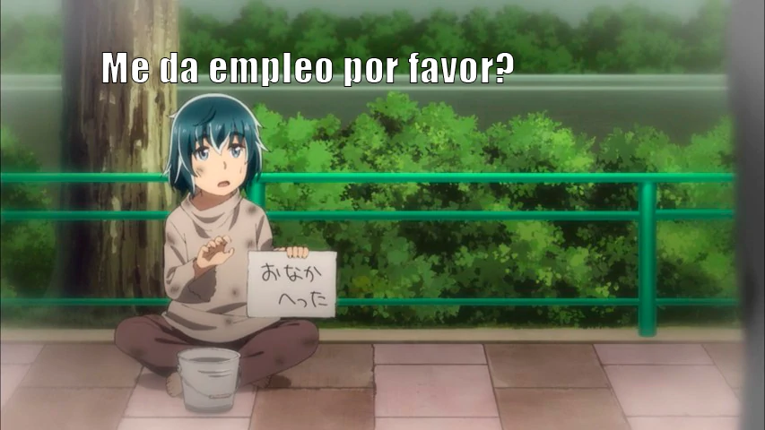
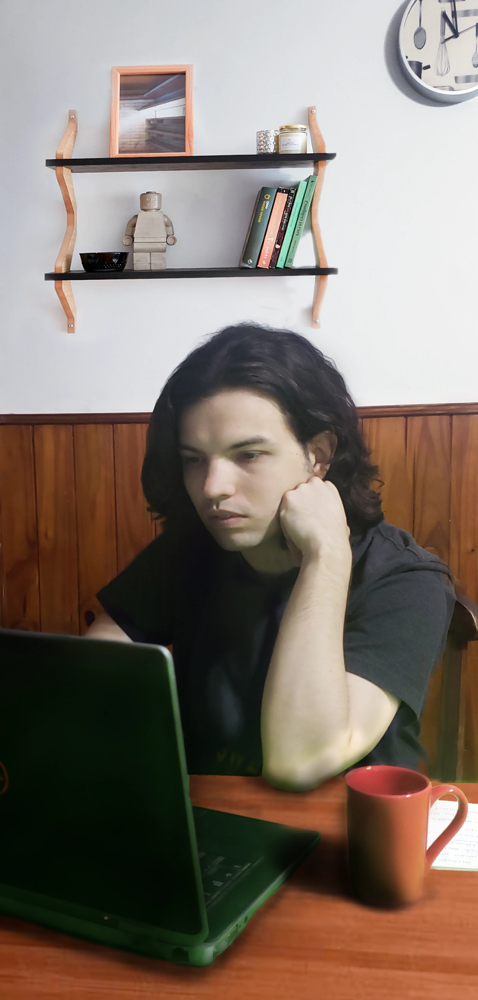
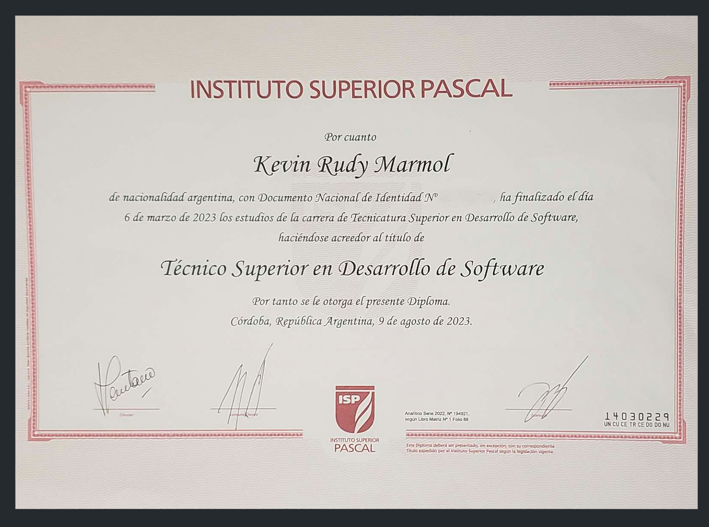

Hola, soy Kevin Marmol:
Me gradué como Técnico Superior en Desarrollo de Software en la Universidad Blas Pascal, donde desarrollé aún más mi profunda pasión por la ingeniería de software. Mi enfoque y especialización principal recaen en PHP, donde he acumulado experiencia significativa y he llevado a cabo numerosos proyectos exitosos que demuestran mi destreza en esta área. Mi portafolio refleja mi dedicación y habilidades en PHP, proporcionando ejemplos concretos de mi trabajo en esta tecnología.
Tengo certificaciones en cursos de PHP, Python, C#, CSS, SASS y JavaScript, donde adquirí conocimientos tanto en la sintaxis como en la lógica de programación de estos lenguajes. Además, tengo experiencia en el manejo de bases de datos relacionales, especialmente en MySql y en lenguajes de marcado como HTML5 .
Durante mis prácticas universitarias, adquirí capacitación en el uso de Visual Studio Community para el desarrollo web con .NET en C# y en JavaScript y Typescript, lo que complementa mi conjunto de habilidades técnicas. Cuento también con un certificado en seguridad informática, con habilidades en auditorías, pentesting y hacking ético.
En la actualidad, me encuentro ampliando mis conocimientos a través de la práctica y haciendo uso de diferentes frameworks como lo son Laravel o Symfony para php, aprendí de Angular cuando practiqué desarrollo web en mi Universidad, también tengo conocimiento de frameworks como Django y Flask con python y estoy aprendiendo sobre algunas librerías de JS como la React, Vue o Jquery, además de bootstrap para el diseño. Tengo aspiraciones futuras para incursionar en Java para aplicaciones empresariales y Kotlin para aplicaciones móviles, pero en Java solo si el mercado lo requiere y tengo una gran urgencia, en mi curriculum lo entenderán mejor jaja.
Me considero una persona polifacética en el área, con experiencia en el desarrollo de videojuegos utilizando C# y el motor grafico de Unity, es uno de mis hobbies favoritos, que no puedo llevar a cabo en la actualidad por mi situación económica, que me impide tener el suficiente tiempo libre, ya que debo seguir trabajando en este portafolio, capacitándome y nutriendo mis conocimientos y habilidades con los cursos de desarrollo web que estoy realizando .
Además de mi enorme pasión por programar, una de las razones que también busco empleo es porque estoy interesado en mejorar mi nivel de inglés para abrirme a más oportunidades en el ámbito profesional, si bien verbalmente no puedo tener diálogo, textualmente me las apaño muy bien interpretando textos y bueno también haciendo uso de las nuevas tecnologías, para eso somos gente del mundo de la informática, para automatizar cosas 😎
En mis redes sociales, principalmente en mi instagram, tengo 27.000 seguidores actualmente, donde allí muestro mi gran habilidad en photoshop y expreso mi talento artístico, aunque tengo pensado cambiar dentro de poco mi contenido, cuando mi situación económica lo permita, dando un salto al contenido tecnológico y crear una nueva cuenta porque también me encanta el bushcraft y lo disfruto mucho.

Backend en: 


Frontend/librerias: 

Frameworks: 

Otros: 

Omitir e ir al PDF resumido aquí: Botón descarga
|
|
Comencé mis estudios en la Universidad Blas Pascal a distancia, luego de abandonar Ingeniería en Sistemas por problemas económicos allá por 2016 como consecuencia del divorcio de mis padres y la carrera de Analista en Sistemas en 2019 faltándome solo un año para titularme, y la razón fue por diferencias con algunas maneras obsoletas de enseñar para los tiempos que corren de algunos docentes, pero tuve un gran profesor con el que aprendí de PHP con ejercicios tanto de programación estructurada y orientados a Objetos. En mi paso por la Universidad Blas Pascal conté con clases virtuales y una gran asistencia de cada profesor. |
|---|
Durante mi primer año en la Universidad Blas Pascal, adquirí conocimientos sólidos en Programación Orientada a Objetos en Lenguaje Java. Las diversas consignas de los trabajos prácticos me resultaron bastante sencillas, gracias a mi experiencia previa en la lógica de la programación orientada a objetos de mis carreras anteriores. Además, aprendí a crear diversos diagramas, incluyendo Diagramas de Entidad Relación, Diagramas de Flujo de Datos, Diagramas de Casos de Uso y Diagramas de Clases. Estos conceptos no solo fortalecieron mi comprensión teórica, sino que también los apliqué de manera efectiva en la práctica, lo que me permitió enfrentar los desafíos académicos con confianza y solidez.
Luego a final de cada cuatrimestre se tomaba una evaluación final en todas las materias a las que estaba inscripto y esta se hacia de forma presencial en la sede de la Universidad que se aloja en mi ciudad.
Durante mi segundo año aprendí sobre C# utilizando .Net en Visual Studio Community, donde cree varios proyectos webs con temas significativos, como un Registro de usuarios que almacenaba sus datos en SQL SERVER y autentificación a través de un login, además, con un sistema de Roles, donde el administrador tenía acceso a un CRUD con cada regitro de usuario o cada temario al que cada usuario se suscribía. Usé una arquitectura MVC para estos proyectos, pero para pulir habilidades en CSS sentí que mi practica en la universidad fue muy pobre de contenido, por ello me complementé de cursos de pago extras en Udemy.com y aún sigo puliendo mis habilidades en ello.
En mi tercer y último año aprendí sobre fundamentos básicos de JavaScript entre ellos eventos de DOM, objetos y arreglos, localstorage, drag-droup y varias cosas más donde tuve que ser demasiado autodidacta investigando como por ejemplo sobre Scope y contexto de ejecución o Asincronía donde trabajas con operaciones asíncronas utilizando callbacks, promesas y async/await. Honestamente sentí que esta parte fue bastante floja en mi paso sobre la universidad, por la poca práctica que se dio, por lo que tuve que complementar mi educación y aún lo sigo haciendo, con cursos extras de pago, donde utilicé nuevamente la plataforma de Udemy y tengo muchas de mis certificaciones de finalización completas que las van a poder apreciar más abajo.
En este mismo año aprendí a utilizar el framework de Angular y de proyecto final presenté una Web de Frutas que lo exigía el mismo profesor, que debía ser de frutas, y la verdad no fue la mejor web que realicé honestamente, porque su diseño no era tan responsive que digamos jaja, pero bueno luego mejoré bastante como desarrollador en ese aspecto ya que conocí el uso de media queries más adelante con los cursos de Udemy.com, este mismo proyecto lo pueden ver en mi portafolio, se pueden registrar con cualquier mail que gusten de prueba, ya que hago uso de firebase y la confirmación de cuenta les llegará a su casilla sin ningún problema.
Seguí con mis prácticas en Udemy.com donde realicé los proyectos destacados que pueden apreciar en mi portafolio, ambos con su Backend en PHP, una base de Datos en MySQL, Javascript incluido en las vistas y SASS en los estilos haciendo uso de de Gulp para automatizar tareas. También hice uso de librerías de PHP como PHPMailer donde lo enlacé con MailTrap para probar la confirmación de Usuarios o el recuperar contraseñas
Algún día me gustaría aprender también Kotline para el desarrollo en Android, soy muy polifacético, me gustaría que me de la vida para aprenderlo todo, me entusiasma y disfruto mucho programar webs, apps y videojuegos o exploits y scripts maliciosos, pero esto último es un secreto a voces, respeto a todos y sigo la filosofía de Dont Tread on Me.
Sobre mi experiencia laboral, bueno, aquí tengo que hablar y ser muy honesto con ustedes, no tengo ningún tipo de experiencia laboral con ninguna empresa o trabajo de oficina, pero tengo experiencia como Freelance a distancia y realizando dos trabajos personalmente en mi propia localidad para negocios locales.
La principal razón por la que creé este proyecto de sitio web de portafolio es porque no tengo experiencia laboral previa con ninguna empresa. Como recién graduado y desarrollador junior, considero que la mejor manera de destacar mi talento es a través de un portafolio que muestre todos y cada uno de los proyectos en los que he trabajado hasta ahora, incluido este sitio que estás leyendo, que se irá actualizando y añadiendo más trabajos de mis prácticas, porque los trabajos que me surjan como freelance prefiero ser reservado con el código fuente, este portafolio es mí bala de plata para salir adelante en lo que tantos años dediqué horas de estudio y práctica.
En La región donde vivo, La Pampa, la industria tecnológica no está en un gran desarrollo como en las grandes ciudades, por lo que buscar oportunidades localmente y vivir de desarrollar software es muy complicado, por esa razón me abrí a las posibilidades del mundo y al resto de mi país Argentina para encontrar más opciones, uno de mis sueños es vivir como un nómada y del trabajo remoto, sobre todo con la llegada de Starlink a mi país, pero sé que es difícil siendo junior encontrar una posibilidad de esas, por lo que estoy dispuesto a mudarme a la región que sea necesaria y pulir mis habilidades en la oficina hasta ganarme el privilegio de trabajar remotamente.
Tengo deseos y ambiciones de que algún día esta región florezca y se convierta en la nueva Silicon Valley de Sudamérica y ser partícipe de ello creando una gran corporación.
Además tengo deseos de algún día cuando más mayor, de crear un nuevo Instituto educativo para traer a muchos talentos del mundo que, así como yo siendo un adolescente, no tuvieron la educación tecnológica correspondiente al nuevo mundo del mañana que se avecina, porque, así como vendrán nuevas mejoras, vendrán nuevos peligros.
Realicé trabajos de freelance de manera online en diferentes sitios de trabajo a distancia, y para gente de mi localidad, que requerían una web para sus negocios, estos mismos fueron trabajos de manera presencial y completamente de frontend, ya que utilicé como plantilla el proyecto que está en la sección de portafolio llamado Sitio Freelance para crear una web para una tienda de insumos escolares y fotocopiadora.
El segundo sitio fue similar, pero para una Distribuidora Mayorista de Refrigerados y Embutidos, donde quedamos para la próxima en crear su tienda Virtual, con su carrito de compras y registros de usuarios, pero todavía no se dio la oportunidad.
|
Estoy realizando y tengo varios cursos pendientes actualmente que compré con anterioridad, porque como detallé en mi parte educativa, siento que no tuve una formación muy buena para el mercado laboral actual en el lado de lenguajes como JavaScript o con hojas de estilo en cascada (CSS), trato de cubrir mis puntos débiles para ser un mejor profesional mañana y porque además disfruto mucho de estos me encanta seguir aprendiendo, tengo cursos pendientes en para fortalecer mi conocimiento en Javascript y luego abrirme a React, TypeScript, jQuery, Vue.js, Node.js, y seguir practicando con frameworks de php como Symphony, Laravel |
 |
|---|
Php se ha convertido en mi estandarte y caballo de batalla gracias a los cursos tomados en Udemy, fue donde más me especialicé , todo el backend de mis sitios esta hecho con ese lenguaje, aunque siento que aún me queda mucho por descubrir y aprender del mismo , pero manejo muy bien la sintaxis, en mis proyectos destacados lo podrán apreciar
Yo sé muy bien que quien mucho abarca poco aprieta, pero también tengo deseos de aprender Python en el backend lo he probado muy poco usando Django y Flask, para cosas muy básicas como un CRUD, y también con C#, me gusto aprenderlo en mi paso por la universidad, siempre me gusta estar a la vanguardia con lo que necesita el mercado y si me tengo que especializar en ello lo haré, por lo que pronto añadiré cosas en mi portafolio con estos lenguajes que también aprendí su sintaxis.
Debajo les dejo mi curriculum para descargar y estamos en contacto, pueden escribirme a mi gmail kevin.marmolr@gmail.com que es la opción más segura o en mi formulario de contacto debajo del todo del sitio web, en el footer para los entendidos que son programadores jaja, o agregarme a Discord, por cuestiones de seguridad ya no hago mas público mi Teléfono personal.

.jpg)
.jpg)
.jpg)
.jpg)
.jpg)
.jpg)
.jpg)
.jpg)
.jpg)
.jpg)
.jpg)
Los Proyectos en Destacado ★ estan subidos en DomCloud, poseen Roles de Usuarios y Administrador. Para probar estas funciones solicitarlo por Discord o Gmail y se le asignará una cuenta desechable que caducará una vez terminé de probar sus funciones.
Cada Base de Datos tiene un Backup, asi que sientase libre de borrar, actualizar o crear cualquier registro
Rellene el formulario o escríbame en: kevin.marmolr@gmail.com